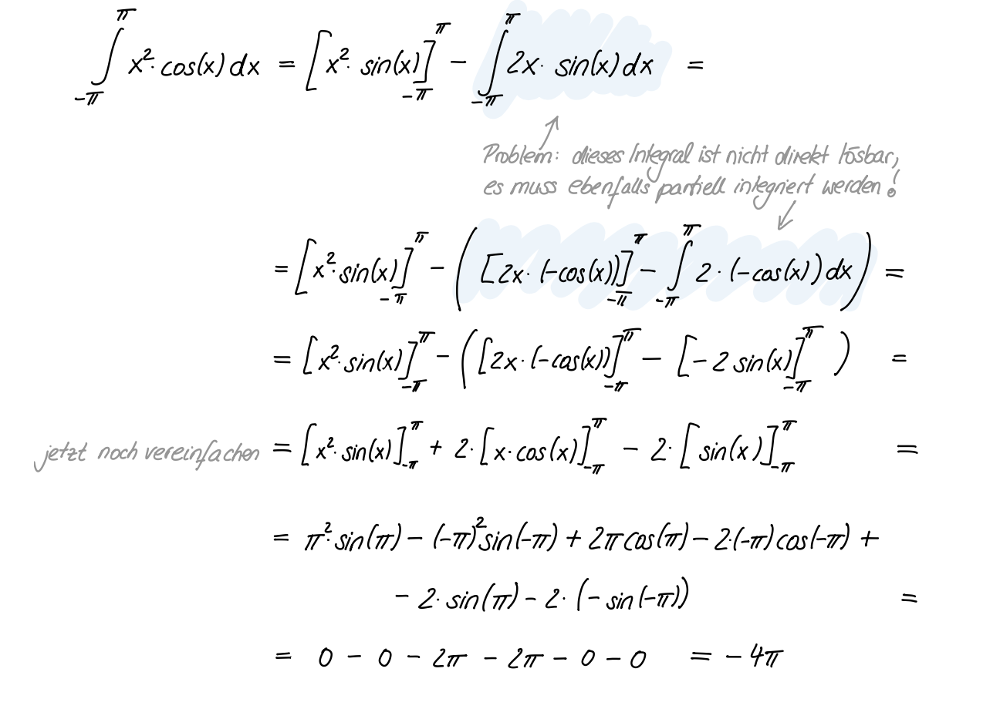
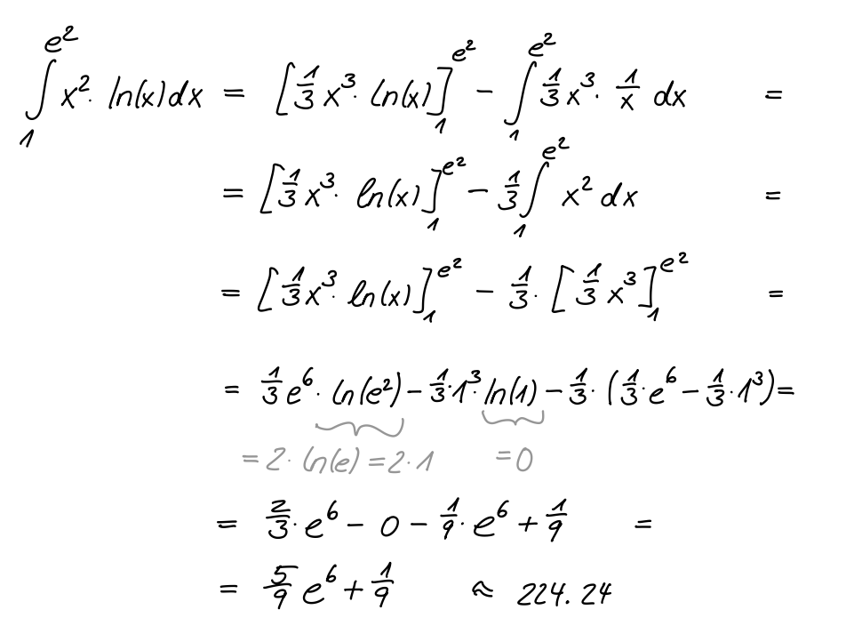

Übungen
Contents
Übungen#
Warnung
Achtung, dieser Abschnitt des Vorlesungsskriptes wird gerade überarbeitet!!!
Übung 1.1
Integrieren Sie
einmal mittels partieller Integration und einmal mit der Substitutionsregel.
Tipp: partielle Integration: \(u(x)=x\); Substitution: \(x = z - 1\).
Lösung
Lösungsweg
partielle Integration: \(\quad \int_{a}^{b} u(x)v'(x)\, dx = \left[u(x)v(x)\right]_{a}^{b} - \int u'(x)v(x)\, dx\)
Wir setzen in die partielle Integrationsregel ein:
Substitution: \(\quad z = x + 1 \quad \Rightarrow \frac{dz}{dx} = 1 \quad \Rightarrow dx = 1\, dz\)
Wir substituieren:
Rücksubstitution:
Klammert man den Term \(\frac{2}{3}(x+1)^{\frac{3}{2}}\) aus und fasst den Rest zusammen, stellt man fest, dass beide Ergebnisse gleich sind.
Übung 1.2
Berechnen Sie das Integral
Lösung
Lösungsweg
Hier ist die partielle Integration einmal anzuwenden und man erhält:
Übung 1.3
Berechnen Sie
Lösung
Lösungsweg

Übung 1.4
Berechnen Sie
Lösung
Lösungsweg

Übung 1.5
Berechnen Sie
Lösung
Lösungsweg
Übung 1.6
Berechnen Sie
Lösung
Lösungsweg

Weitere Übungsaufgaben#
Für weitere Übungsaufgaben steht Ihnen der MATEX-Übungsaufgaben-Generator zur Verfügung. Wählen Sie anfangs Stufe 1 und steigern Sie sich auf Stufe 3.